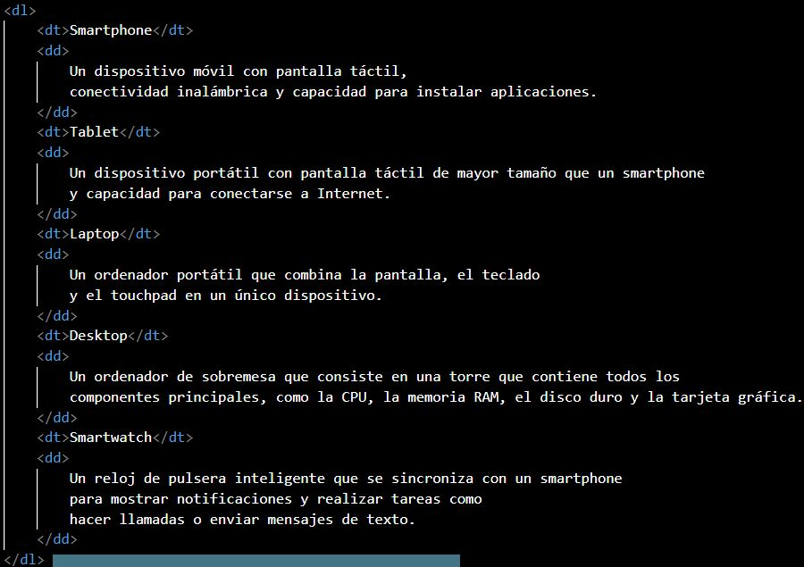

Las listas HTML permiten a los desarrolladores web agrupar un conjunto de elementos relacionados en listas.
Lista HTML desordenada
Una lista desordenada comienza con la <ul>etiqueta. Cada elemento de la lista comienza con la <li>etiqueta.
Lista HTML ordenada
Una lista ordenada comienza con la <ol> etiqueta. Cada elemento de la lista comienza con la <li> etiqueta.
Listas de descripcion HTML
Una lista de descripción es una lista de términos, con una descripción de cada término.
La <dl> etiqueta define la lista de descripciones, la <dt> etiqueta define el término (nombre) y la <dd> etiqueta describe cada término
Ejemplo:
Resultado:
- Smartphone
- Un dispositivo móvil con pantalla táctil, conectividad inalámbrica y capacidad para instalar aplicaciones.
- Tablet
- Un dispositivo portátil con pantalla táctil de mayor tamaño que un smartphone y capacidad para conectarse a Internet.
- Laptop
- Un ordenador portátil que combina la pantalla, el teclado y el touchpad en un único dispositivo.
- Desktop
- Un ordenador de sobremesa que consiste en una torre que contiene todos los componentes principales, como la CPU, la memoria RAM, el disco duro y la tarjeta gráfica.
- Smartwatch
- Un reloj de pulsera inteligente que se sincroniza con un smartphone para mostrar notificaciones y realizar tareas como hacer llamadas o enviar mensajes de texto.